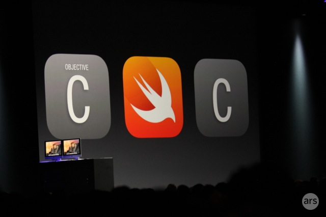

Introduction
Swift is a new programming language for developing iOS and OS X applications. It is based on C and Objective-C, but without the compatibility constraints of C. Swift adopts safe programming patterns and adds modern features to make programming simpler, more flexible, and more fun. The interface is built on the widely beloved Cocoa and Cocoa Touch frameworks, showcasing a new direction in software development.

Swift has been in development for many years. Apple built on existing compilers, debuggers, and frameworks as its underlying architecture. It uses ARC (Automatic Reference Counting) to simplify memory management. Our framework stack has always been based on Cocoa. Objective-C evolved to support blocks, collection literals, and modules, allowing modern language frameworks to be used without deep involvement. Thanks to this foundational work, it became possible to introduce a new programming language into Apple software development.
Objective-C developers will find Swift familiar. Swift adopts Objective-C's named parameters and dynamic object model. It provides interoperability with the Cocoa frameworks and mix-and-match. Based on these foundations, Swift introduces many new features and combines procedural and object-oriented functionality.
Swift is also friendly to new programmers. It is an industrial-quality systems programming language, yet as friendly as a scripting language. It supports playgrounds, allowing programmers to experiment with a piece of Swift code and immediately see the results, without the hassle of building and running an app.
Swift integrates ideas from modern programming languages and the wisdom of Apple's engineering culture. The compiler is optimized for performance, while the language is optimized for development, without compromising either. You can start with "Hello, world" and move on to an entire system. All of these make Swift a source of innovation for Apple software developers.
Swift is a fantastic way to write iOS and OS X applications, and it will continue to introduce new features. We can't wait to see what you create with it.
Getting Started with Swift
Learning a new language should start with printing "Hello, world". In Swift, that is just one line:
println("Hello, world")
If you have written C or Objective-C code, this syntax looks familiar. In Swift, this is a complete program. You don't need to import a separate library for input/output and string handling. Code at global scope is the entry point for the program, so you don't need to write a main() function. You also don't need to write semicolons after every statement. This primer provides enough information to teach you how to accomplish a programming task. Don't worry about things you don't understand yet; anything not explained clearly here will be covered in detail later in this book.
Note:As a best practice, you can open this chapter in an Xcode playground. Playgrounds let you edit code and immediately see the results.
Simple Values
Use let to define a constant and var to define a variable. The value of a constant doesn't need to be known at compile time, but you must assign it at least once. This means you can use a constant to name a value that you determine once but use in many places.
var myVariable = 42 myVariable = 50 let myConstant = 42
Note:Constant definitions here are similar to variables in functional programming languages: once assigned, they cannot be changed. Use them often; it's good for you.
A constant or variable must have the same type as the value you assign. Therefore, you don't have to explicitly define the type. Just provide a value to create a constant or variable, and let the compiler infer its type. In the example above, the compiler infers that myVariable is an integer type because its initial value is an integer.
Note:Types are bound to variable names, which makes this a statically typed language. It helps with static optimization. This differs from Python, JavaScript, and others. If the initial value doesn't provide enough information (or if there is no initial value), you can write the type after the variable name, separated by a colon.
let imlicitInteger = 70 let imlicitDouble = 70.0 let explicitDouble: Double = 70
Values are never implicitly converted to other types. If you need to convert a value to a different type, explicitly construct an instance of the desired type.
let label = "The width is " let width = 94 let widthLabel = label + String(width)
There is an even simpler way to include values in strings: write the value in parentheses, and put a backslash ("\") before the parentheses. For example:
let apples = 3 let oranges = 5 let appleSummary = "I have \(apples) apples." let fruitSummary = "I have \(apples + oranges) pieces of fruit."
To create an array or dictionary, use square brackets "[]", and access their elements by writing the index or key in brackets.
var shoppingList = ["catfish", "water", "tulips", "blue paint"] shoppingList[1] = "bottle of water" var occupations = [ "Malcolm": "Captain", "Kaylee": "Mechanic", ] occupations["Jayne"] = "Public Relations"
To create an empty array or dictionary, use the initializer syntax:
let emptyArray = String[]() let emptyDictionary = Dictionary<String, Float>()
If type information cannot be inferred, you can write an empty array as "[]" and an empty dictionary as "[:]" — for example, when you set a variable of a known type and pass it as an argument to a function.
shoppingList = [] //去购物并买些东西
Control Flow
Use if and switch for conditionals. Use for-in, for, while, and do-while for loops. Parentheses are not required, but braces around the body are required.
let individualScores = [75, 43, 103, 87, 12]
var teamScore = 0
for score in individualScores {
if score > 50 {
teamScores += 3
} else {
teamScores += 1
}
}
teamScore
In an if statement, the condition must be a Boolean expression — this means if score { ... } is an error and cannot be implicitly compared to 0. You can use if and let together to work with values that might be missing. These values are optional. An optional value can contain a value or contain nil to indicate that the value doesn't exist yet. Write a question mark "?" after the type to mark the value as optional.
var optionalString: String? = "Hello"
optionalString == nil
var optionalName: String? = "John Appleseed"
var greeting = "Hello!"
if let name = optionalName {
greeting = "Hello, \(name)"
}
Note:If the optional value is nil, the condition is false and the code in braces is skipped. Otherwise, the optional value is unwrapped and assigned to a constant, making the unwrapped value available within the code block.
switch supports many kinds of data and a wide variety of comparisons — it isn't limited to integers and equality tests.
let vegetable = "red pepper"
switch vegetable {
case "celery":
let vegetableComment = "Add some raisins and make ants on a log."
case "cucumber", "watercress":
let vegetableComment = "That would make a good tea sandwich."
case let x where x.hasSuffix("pepper"):
let vegetableComment = "Is it a spicy \(x)?"
default:
let vegetableComment = "Everything tastes good in soup."
}
Note:
After a matched case is executed, the program exits the switch rather than continuing to the next case. So you no longer need break to leave the switch.
You can use for-in to iterate over each item in a dictionary, providing a pair of names to use for each key-value pair.
let interestingNumbers = [
"Prime": [2, 3, 5, 7, 11, 13],
"Fibonacci": [1, 1, 2, 3, 5, 8],
"Square": [1, 4, 9, 16, 25],
]
var largest = 0
for (kind, numbers) in interestingNumbers {
for number in numbers {
if number > largest {
largest = number
}
}
}
Use while to repeat a block of code until the condition changes. The loop condition can be placed at the end to ensure the loop executes at least once.
var n = 2
while n < 100 {
n = n * 2
}
n
var m = 2
do {
m = m * 2
} while m < 100
m
You can keep an index in a loop, using ".." to indicate a range of indices, or explicitly declaring an initial value, condition, and increment. These two loops do the same thing:
var firstForLoop = 0
for i in 0..3 {
firstForLoop += i
}
firstForLoop
var secondForLoop = 0
for var i = 0; i < 3; ++i {
secondForLoop += 1
}
secondForLoop
A range constructed with .. ignores the highest value, while a range constructed with ... includes both values.
Functions and Closures
Use func to declare a function. Call a function by its name followed by a parenthesized list of arguments. Use -> to separate the parameter names and the return type.
func greet(name: String, day: String) -> String {
return "Hello \(name), today is \(day)."
}
greet("Bob", "Tuesday")
Use a tuple to return multiple values.
func getGasPrices() -> (Double, Double, Double) {
return (3.59, 3.69, 3.79)
}
getGasPrices()
A function can accept a variable number of arguments, gathered into an array.
func sumOf(numbers: Int...) -> Int {
var sum = 0
for number in numbers {
sum += number
}
return sum
}
sumOf()
sumOf(42, 597, 12)
Functions can be nested. A nested function can access the variables of the function it is defined in. You can use nested functions to organize code that would otherwise be too long or too complex.
func returnFifteen() -> Int {
var y = 10
func add() {
y += 5
}
add()
return y
}
returnFifteen()
Functions are first-class types. This means a function can return another function.
func makeIncrementer() -> (Int -> Int) {
func addOne(number: Int) -> Int {
return 1 + number
}
return addOne
}
var increment = makeIncrementer()
increment(7)
A function can take other functions as arguments.
func hasAnyMatches(list: Int[], condition: Int -> Bool) -> Bool {
for item in list {
if condition(item) {
return true
}
}
return false
}
func lessThanTen(number: Int) -> Bool {
return number < 10
}
var numbers = [20, 19, 7, 12]
hasAnyMatches(numbers, lessThanTen)
Functions are actually a special case of closures. You can write a closure without a name, simply by placing it in braces. Use in to separate the arguments and the return value from the body.
numbers.map({
(number: Int) -> Int in
let result = 3 * number
return result
})
There are several options when writing closures. When a closure's type is already known, such as for a callback, you can omit its parameters and return type, or both. A single-expression closure can directly return its value.
numbers.map({number in 3 * number})
You can refer to an argument by number rather than by name, which is useful for very short closures. A closure passed as the last argument to a function can be placed after the function call's parentheses.
sort([1, 5, 3, 12, 2]) { $0 > $1 }
Objects and Classes
Use class to create a class. A property declaration is just a constant or variable declaration in the class context. Methods and functions are written the same way.
class Shape {
var numberOfSides = 0
func simpleDescription() -> String {
return "A shape with \(numberOfSides) sides."
}
}
Create an instance of a class by putting parentheses after the class name. Use dot syntax to access the instance's properties and methods.
var shape = Shape() shape.numberOfSides = 7 var shapeDescription = shape.simpleDescription()
This version of the Shape class is missing something important: an initializer to set up the class when creating an instance. Use init to create one.
class NamedShape {
var numberOfSides: Int = 0
var name: String
init(name: String) {
self.name = name
}
func simpleDescription() -> String {
return "A Shape with \(numberOfSides) sides."
}
}
Note:self is used to distinguish the name property from the name argument. Initializers are declared like functions, except that they create an instance of the class. Every property needs an assigned value, either in its declaration or in the initializer.
Use deinit to create a deinitializer to perform cleanup when the object is destroyed.
Subclasses include their superclass name, separated by a colon. There is no need to declare a superclass when inheriting from the standard root class, so you can omit it.
Methods in a subclass can override the superclass's implementation by marking them with override. Without override, the compiler treats it as an error. The compiler also checks that methods marked override actually override a superclass method.
class Square: NamedShape {
var sideLength: Double
init(sideLength: Double, name: String) {
self.sideLength = sideLength
super.init(name: name)
numberOfSides = 4
}
func area() -> Double {
return sideLength * sideLength
}
override func simpleDescription() -> String {
return "A square with sides of length \(sideLength)."
}
}
let test = Square(sideLength: 5.2, name: "my test square")
test.area()
test.simpleDescription()
Note:Properties can have getters and setters.
class EquilateralTriangle: NamedShape {
var sideLength: Double = 0.0
init(sideLength: Double, name: String) {
self.sideLength = sideLength
super.init(name: name)
numberOfSides = 3
}
var perimeter: Double {
get {
return 3.0 * sideLength
}
set {
sideLength = newValue / 3.0
}
}
override func simpleDescription() -> String {
return "An equilateral triangle with sides of length \(sideLength)."
}
}
var triangle = EquilateralTriangle(sideLength: 3.1, name: "a triangle")
triangle.perimeter
triangle.perimeter = 9.9
triangle.sideLength
In the setter for perimeter, the new value has the implicit name newValue. You can provide a distinct name in parentheses after set if you prefer.
Note:The initializer for EquilateralTriangle has three different steps:
- Setting the value of properties
- Calling the superclass's initializer
- Change the value of a property defined by the superclass, and add extra work to use methods, getters, and setters here as well.
If you don't need a computed property, but still want to provide work to perform after setting a value, use willSet and didSet. For example, the following class ensures that the side length of its triangle equals the side length of the rectangle.
class TriangleAndSquare {
var triangle: EquilaterTriangle {
willSet {
square.sideLength = newValue.sideLength
}
}
var square: Square {
willSet {
triangle.sideLength = newValue.sideLength
}
}
init(size: Double, name: String) {
square = Square(sideLength: size, name: name)
triangle = EquilaterTriangle(sideLength: size, name: name)
}
}
var triangleAndSquare = TriangleAndSquare(size: 10, name: "another test shape")
triangleAndSquare.square.sideLength
triangleAndSquare.triangle.sideLength
triangleAndSquare.square = Square(sideLength: 50, name: "larger square")
triangleAndSquare.triangle.sideLength
There is an important difference between class methods and functions. Function parameter names are only used within the function, but method parameter names can also be used when calling the method (except the first parameter). By default, a method has a parameter with the same name, and when called it is the parameter itself. You can specify a second name to use inside the method.
class Counter {
var count: Int = 0
func incrementBy(amount: Int, numberOfTimes times: Int) {
count += amount * times
}
}
var counter = Counter()
counter.incrementBy(2, numberOfTimes: 7)
When working with optional values, you can write "?" before an operator, similar to methods and properties. If the value before "?" is already nil, everything after "?" is automatically ignored, and the whole expression is nil. Otherwise, the optional value is unwrapped, and everything after "?" acts on the unwrapped value. In both cases, the value of the whole expression is an optional value.
let optionalSquare: Square? = Square(sideLength: 2.5, name: "optional square") let sideLength = optionalSquare?.sideLength
Enumerations and Structures
Use enum to create an enumeration. Like classes and other named types, enumerations can have methods.
enum Rank: Int {
case Ace = 1
case Two, Three, Four, Five, Six, Seven, Eight, Nine, Ten
case Jack, Queen, King
func simpleDescrition() -> String {
switch self {
case .Ace:
return "ace"
case .Jack:
return "jack"
case .Queen:
return "queen"
case .King:
return "king"
default:
return String(self.toRaw())
}
}
}
let ace = Rank.Ace
let aceRawValue = ace.toRaw()
In the example above, the raw value type is Int, so you only need to specify the first raw value. The subsequent raw values are assigned in order. You can also use strings or floating-point numbers as the raw values of an enumeration.
Use the toRaw and fromRaw functions to convert between raw values and enumeration values.
if let convertedRank = Rank.fromRaw(3) {
let threeDescription = convertedRank.simpleDescription()
}
The member values of an enumeration are actual values, not raw values written in some other way. In fact, in some cases there is no raw value, that is, when you don't provide one.
enum Suit {
case Spades, Hearts, Diamonds, Clubs
func simpleDescription() -> String {
switch self {
case .Spades:
return "spades"
case .Hearts:
return "hearts"
case .Diamonds:
return "dismonds"
case .Clubs:
return "clubs"
}
}
}
let hearts = Suit.Hearts
let heartsDescription = hearts.simpleDescription()
Note the two ways to reference the Hearts member above: when assigning to the hearts constant, the enum member Suit.Hearts is referenced by its full name because the constant has no explicit type. In the switch, the enum is referenced via .Hearts because the value of self is already known. You can use the convenient method whenever you can.
Use struct to create a structure. Structures support many of the same behaviors as classes, including methods and constructors. One important difference is that structures are always copied when passed around in code (value passing), while classes are passed by reference.
struct Card {
var rank: Rank
var suit: Suit
func simpleDescription() -> String {
return "The \(rank.simpleDescription()) of \
(suit.simpleDescription())"
}
}
let threeOfSpades = Card(rank: .Three, suit: .Spades)
let threeOfSpadesDescription = threeOfSpades.simpleDescription()
<p><strong>注意：</strong>
An enum's instance member can have instance values. Instances of the same enum member can have different values. You assign the values when creating the instance. The difference between assigned values and raw values: the raw values of an enum are the same for all its instances, and you provide the raw values when defining the enum.
For example, suppose a situation requires obtaining the sunrise and sunset times from a server. The server can respond with the same information or some error message.
enum ServerResponse {
case Result(String, String)
case Error(String)
}
let success = ServerResponse.Result("6:00 am", "8:09 pm")
let failure = ServerResponse.Error("Out of cheese.")
switch success {
case let .Result(sunrise, sunset):
let serverResponse = "Sunrise is at \(sunrise) and sunset is at \(sunset)."
case let .Error(error):
let serverResponse = "Failure... \(error)"
}
Note:The sunrise and sunset times are actually selected from a partial match of ServerResponse.
References
Apple Swift Programming Language Getting Started Tutorial:http://gashero.iteye.com/blog/2075324
The Swift Programming Language：https://developer.apple.com/library/prerelease/ios/documentation/Swift/Conceptual/Swift_Programming_Language/
Click me to share notes
<p style="font-size:14px;">Notes must be an extension of the content of this article!</p><br> <p style="font-size:12px;"><a href="../tougao.html" target="_blank">Article submission, click here</a></p> <p style="font-size:14px;"><a href="./runoob-user-test-intro.html" target="_blank">How to get a registration invitation code</a></p> <h3 class="text-muted"><i class="fa fa-info-circle" aria-hidden="true"></i> You must <a href=".." class="runoob-pop">log in</a> before sharing notes!</h3> <p><a href="./runoob-user-test-intro.html" target="_blank">How to get a registration invitation code</a></p>